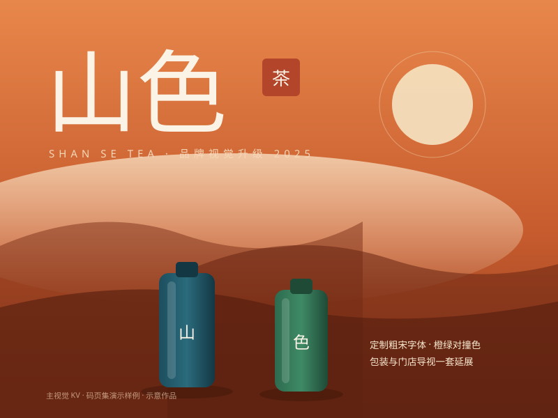
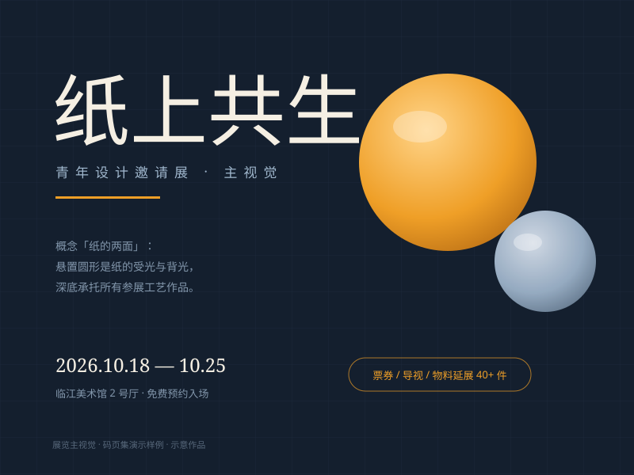
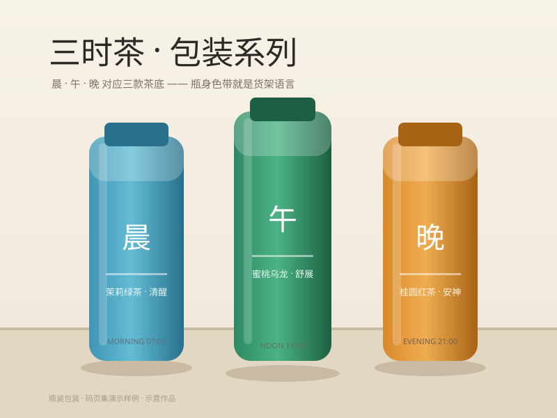

01
「山色」茶饮 · 品牌视觉升级
主设计师 · 2025.03 — 2025.06 · 已落地门店 8 家
- 问题
- 品牌向下沉市场扩张后，旧视觉偏网红风，与「茶山产地」的定位脱节。
- 做法
- 从茶山晨雾提取橙绿对撞色，字体改为定制粗宋；包装与门店导视一套延展。
- 结果
- 改版后季度复购提升 11%，方案被沿用为年度传播基调。
品牌视觉 / 展览主视觉 / 包装 · 三年经验
我是林然，视觉设计师。这份页面按「作品说话」整理——每一件都标清我的角色、解决的设计问题，与最终落地的结果。

01
主设计师 · 2025.03 — 2025.06 · 已落地门店 8 家

02
视觉负责人 · 2025.10 — 2025.11 · 观展 6000+ 人次

03
包装设计师 · 2024.05 — 2024.08 · 电商月销 2 万瓶